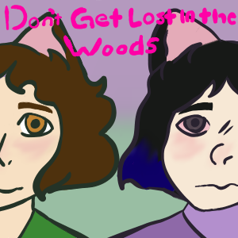
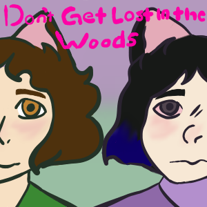
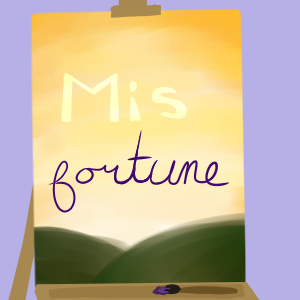
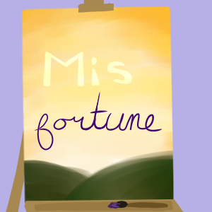
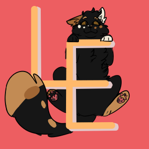
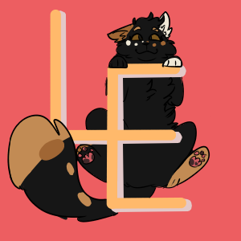
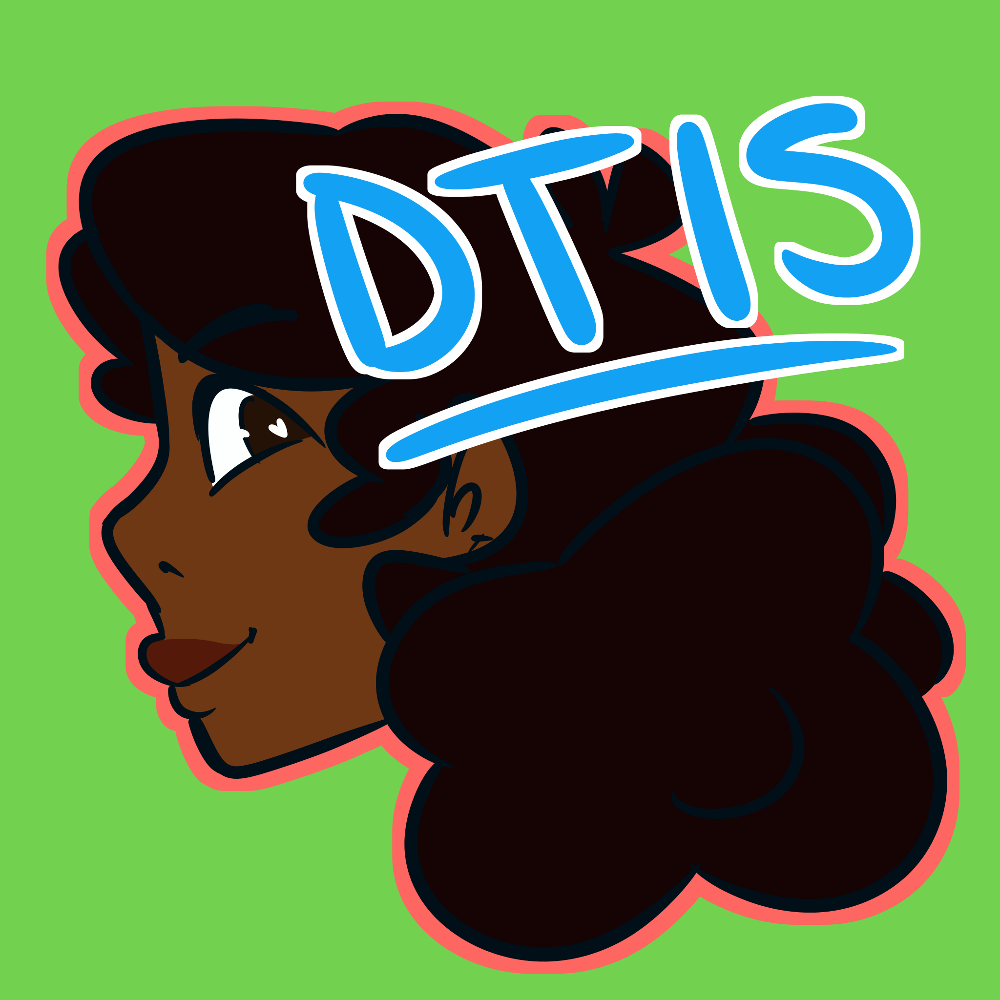
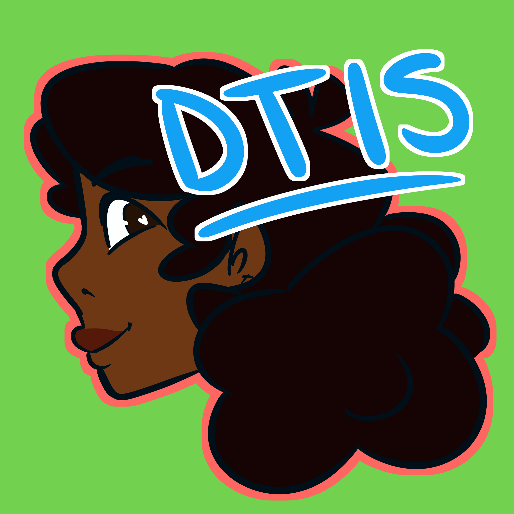

Here's our list of series. The way they work is that they all take place in the same universe, but some take place in the past, some are in the future, and some are in completely different countries. Each one might have small references to characters or companies that exist in a different series, but reading every single story is not mandatory to understand what's going on overall.
Don't Get Lost in the Woods
 Don't Get Lost in the Woods is a story that follows main characters Silkvre and Different, as they attempt to break a cycle of silence in their species, a tradition held generation to generation for as long as they can remember. They are willing to leave everything behind and even do unthinkable things to get their names heard.
| [TUMBLR] | [TAPAS] | [START] |
Written by Gianna
 Don't Get Lost in the Woods is a story that follows main characters Silkvre and Different, as they attempt to break a cycle of silence in their species, a tradition held generation to generation for as long as they can remember. They are willing to leave everything behind and even do unthinkable things to get their names heard.
| [TUMBLR] | [TAPAS] | [START] |
Written by Gianna
[Mis]Fortune

An unusual band of people trying to get through life. Helping each other along the way and trying to figure out how to live life under their unusual circumstances.
| [TUMBLR]| [TAPAS] | [WEBTOON] | [START] |
Written by Kienen

An unusual band of people trying to get through life. Helping each other along the way and trying to figure out how to live life under their unusual circumstances.
| [TUMBLR]| [TAPAS] | [WEBTOON] | [START] |
Written by Kienen
Life's Expectations

Life’s Expectations is a coming of age story. Follow Bubs as she learns about herself and makes friends over the years! In a world full of magic and endless possibilities, what’s the worst that can happen?
| [TUMBLR] | [TAPAS] | [WEBTOON] | [START] |
Written by Alice

Life’s Expectations is a coming of age story. Follow Bubs as she learns about herself and makes friends over the years! In a world full of magic and endless possibilities, what’s the worst that can happen?
| [TUMBLR] | [TAPAS] | [WEBTOON] | [START] |
Written by Alice
Don't Take it Seriously

Bluzie has always been decent when it comes to academics and socializing, but suddenly, eighth grade arrives. Instead of learning to adapt to her new responsibilities and develop as a person, she decides to instead refuse to grow up altogether. Let's see how that goes.
| [TUMBLR] | [TAPAS] | [WEBTOON] | [START] |
Written by Amina

Bluzie has always been decent when it comes to academics and socializing, but suddenly, eighth grade arrives. Instead of learning to adapt to her new responsibilities and develop as a person, she decides to instead refuse to grow up altogether. Let's see how that goes.
| [TUMBLR] | [TAPAS] | [WEBTOON] | [START] |
Written by Amina